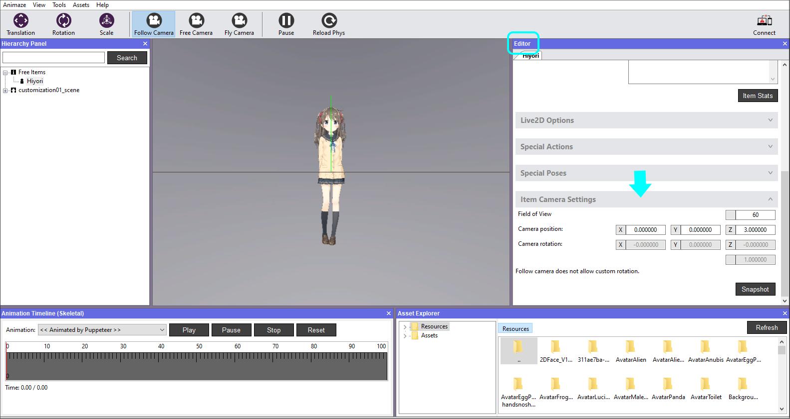
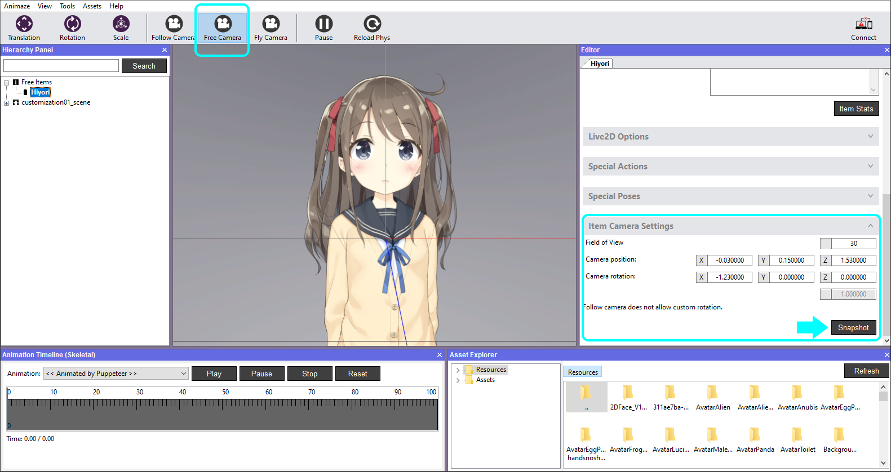
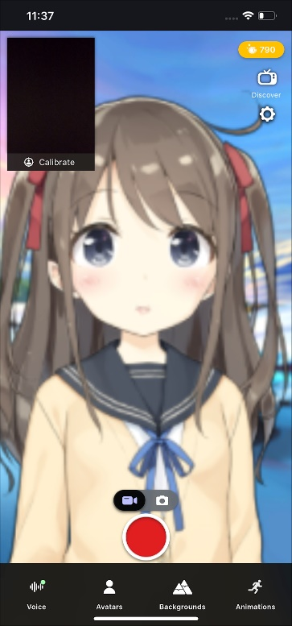

アバターにフレームをつける方法
カメラ設定を行うことで、アプリにおけるアバターの表示方法を制御することができます。アバターに完璧なフレームをつけるために気にしすぎる必要はありません。ピンチでズームイン/アウトすることで、アバターのフレームを調整することができます。
方法はこちら：
-
Animazeエディターを開きます
-
階層パネルと右側のエディターパネルでアバターをクリックして、スクロールダウンし、「アイテムカメラ設定」バーをクリックして展開します

-
XYZ座標軸の値とFlyCameraの視野を変更すると、様々な角度を設定することができます。カメラビューはマウス/キーボードで動かします。アバターにちょうどいいフレームをつけることができたら、「スナップショット」ボタンを押して、カメラ・トランスフォーメーションを生成します（座標をトランスレートします）。


-
階層パネルでアイテムを保存して、次回以降にアバターを読み込んだときに設定を保持できるようにします

自分でアバターを作成したり、既存のアバターを改変したりする場合、一部の要素を再設定する必要があります。これらの詳細な設定については以下のセクションをご覧ください。